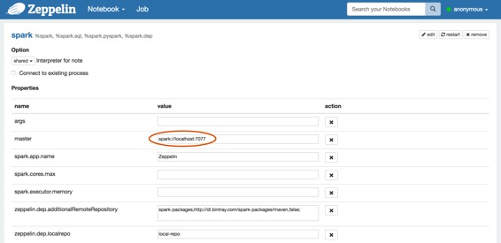
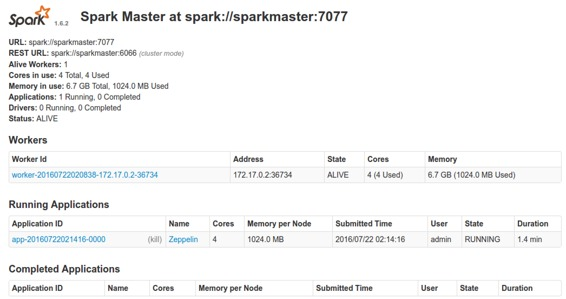
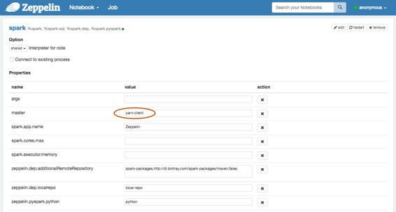
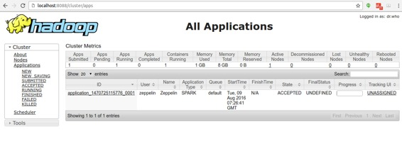
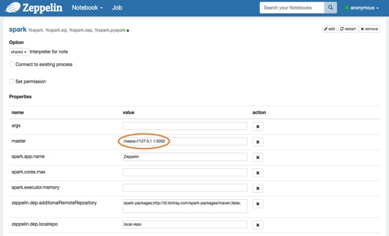
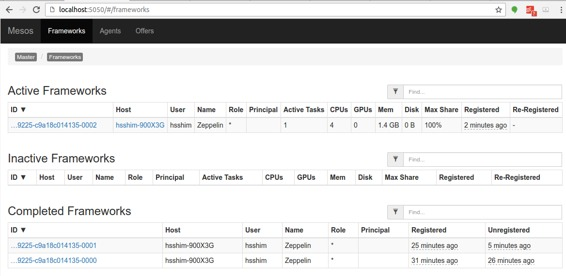

Zeppelin on Spark Cluster Mode( Spark 集群模式下的 Zeppelin )
原文链接 : http://zeppelin.apache.org/docs/0.7.2/install/spark_cluster_mode.html
译文链接 : http://www.apache.wiki/pages/viewpage.action?pageId=10031041
概述
到目前为止，Apache Spark 已经支持三种集群管理器类型（Standalone，Apache Mesos 和 Hadoop YARN ）。本文档将指导您如何使用 Docker 脚本使用 Apache Zeppelin 在3种类型的 Spark 集群管理器上构建和配置环境。所以首先在机器上安装 docker 。
Spark standalone mode ( Spark独立模式 )
Spark standalone 是Spark附带的简单集群管理器，可以轻松设置集群。您可以通过以下步骤简单地设置 Spark独立环境。
注意
由于 Apache Zeppelin 和 Spark 为其 Web UI 使用相同的 8080 端口，因此您可能需要在 conf / zeppelin-site.xml 中更改 zeppelin.server.port 。
1.Build Docker file ( 构建 Docker 文件 )
您可以在脚本 / docker / spark-cluster-managers 下找到 docker 脚本文件。
cd $ZEPPELIN_HOME/scripts/docker/spark-cluster-managers/spark_standalone
docker build -t "spark_standalone" .
2.Run docker ( 运行 docker )
docker run -it \
-p 8080:8080 \
-p 7077:7077 \
-p 8888:8888 \
-p 8081:8081 \
-h sparkmaster \
--name spark_standalone \
spark_standalone bash;
请注意，在这里运行 docker 容器的 sparkmaster 主机名应该在 / etc / hosts 中定义。
3.Configure Spark interpreter in Zeppelin ( 在 Zeppelin 中配置 Spark 解释器 )
将 Spark master 设置为 spark://<hostname>:7077 在 Zeppelin 的解释器设置页面上。

4.Run Zeppelin with Spark interpreter ( 用 Spark 解释器运行 Zeppelin )
在 Zeppelin 中运行带有 Spark 解释器的单个段落后，浏览 https：// <hostname>：8080，并检查 Spark 集群是否运行正常。

您还可以通过以下命令简单地验证 Spark 在 Docker 中运行良好。
ps -ef | grep spark
Spark on YARN mode ( Spark 在 YARN 模式下 )
您可以通过以下步骤简单地设置 Spark on YARN docker 环境。
注意
由于 Apache Zeppelin 和 Spark 为其 Web UI 使用相同的 8080 端口，因此您可能需要在 conf / zeppelin-site.xml 中更改 zeppelin.server.port 。
1.Build Docker file ( 构建Docker文件 )
您可以在脚本 / docker / spark-cluster-managers 下找到 docker 脚本文件。
cd $ZEPPELIN_HOME/scripts/docker/spark-cluster-managers/spark_yarn_cluster
docker build -t "spark_yarn" .
2.Run docker ( 运行 docker )
docker run -it \
-p 5000:5000 \
-p 9000:9000 \
-p 9001:9001 \
-p 8088:8088 \
-p 8042:8042 \
-p 8030:8030 \
-p 8031:8031 \
-p 8032:8032 \
-p 8033:8033 \
-p 8080:8080 \
-p 7077:7077 \
-p 8888:8888 \
-p 8081:8081 \
-p 50010:50010 \
-p 50075:50075 \
-p 50020:50020 \
-p 50070:50070 \
--name spark_yarn \
-h sparkmaster \
spark_yarn bash;
请注意，在这里运行 docker 容器的 sparkmaster 主机名应该在 / etc / hosts 中定义。
3.Verify running Spark on YARN ( 验证在YARN上运行Spark )
您可以通过以下命令简单地验证 Spark 和 YARN 的进程在 Docker 中运行良好。
ps -ef
您还可以在 http：// <hostname>：50070 / ，YARN on http：// <hostname>：8088 / cluster 和 Spark on http：// <hostname>：8080 / 上查看 HDFS 的每个应用程序 Web UI 。
4.Configure Spark interpreter in Zeppelin ( 在 Zeppelin 中配置 Spark 解释器 )
将以下配置设置到 conf / zeppelin-env.sh 。
export MASTER=yarn-client
export HADOOP_CONF_DIR=[your_hadoop_conf_path]
export SPARK_HOME=[your_spark_home_path]
HADOOP_CONF_DIR（ Hadoop 配置路径）在 / scripts / docker / spark-cluster-managers / spark_yarn_cluster / hdfs_conf 中定义。
不要忘记在 Zeppelin Interpreters 设置页面中将 Spark master 设置为 yarn-client ，如下所示。

5.Run Zeppelin with Spark interpreter ( 使用Spark解释器运行Zeppelin )
在 Zeppelin 中使用 Spark 解释器运行单个段落后，浏览 http：// <hostname>：8088 / cluster / apps 并检查 Zeppelin 应用程序运行是否正常。

Spark on Mesos mode ( Spark 在 Mesos 模式 )
你可以通过以下步骤简单地设置 Spark on Mesos 环境。
1.Build Docker file ( 构建 docker 文件 )
cd $ZEPPELIN_HOME/scripts/docker/spark-cluster-managers/spark_mesos
docker build -t "spark_mesos" .
2.Run docker ( 运行 docker )
docker run --net=host -it \
-p 8080:8080 \
-p 7077:7077 \
-p 8888:8888 \
-p 8081:8081 \
-p 8082:8082 \
-p 5050:5050 \
-p 5051:5051 \
-p 4040:4040 \
-h sparkmaster \
--name spark_mesos \
spark_mesos bash;
请注意，在这里运行 docker 容器的 sparkmaster 主机名应该在 / etc / hosts 中定义。
3.Verify running Spark on Mesos ( 验证在Mesos上运行Spark )
您可以通过以下命令简单地验证 Spark 和 Mesos 的进程在 Docker 中运行良好。
ps -ef
您还可以在 http：// <hostname>：5050 / cluster 和 Spark on http：// <hostname>：8080 / 上检查 Mesos 的每个应用程序 Web UI 。
4.Configure Spark interpreter in Zeppelin ( 在Zeppelin中配置Spark解释器 )
export MASTER=mesos://127.0.1.1:5050
export MESOS_NATIVE_JAVA_LIBRARY=[PATH OF libmesos.so]
export SPARK_HOME=[PATH OF SPARK HOME]
不要忘记将 Spark master 设置为 mesos：//127.0.1.1：5050 在 Zeppelin Interpreters 设置页面中，如下所示。

5.Run Zeppelin with Spark interpreter ( 使用Spark解释器运行Zeppelin )
在 Zeppelin 中使用 Spark 解释器运行一个段落后，浏览http://<hostname>:5050/#/frameworks ，并检查 Zeppelin 应用程序运行是否正常。

Troubleshooting for Spark on Mesos ( Spark在Mesos上的故障排除 )
- 如果 hostname 有问题，请在执行 dockerrun 时使用 --add-host 选项
## use `--add-host=moby:127.0.0.1` option to resolve
## since docker container couldn't resolve `moby`
: java.net.UnknownHostException: moby: moby: Name or service not known
at java.net.InetAddress.getLocalHost(InetAddress.java:1496)
at org.apache.spark.util.Utils$.findLocalInetAddress(Utils.scala:789)
at org.apache.spark.util.Utils$.org$apache$spark$util$Utils$$localIpAddress$lzycompute(Utils.scala:782)
at org.apache.spark.util.Utils$.org$apache$spark$util$Utils$$localIpAddress(Utils.scala:782)
- 如果您与 mesos master 有问题，请尝试使用 mesos：//127.0.0.1 而不是 mesos：//127.0.1.1
I0103 20:17:22.329269 340 sched.cpp:330] New master detected at master@127.0.1.1:5050
I0103 20:17:22.330749 340 sched.cpp:341] No credentials provided. Attempting to register without authentication
W0103 20:17:22.333531 340 sched.cpp:736] Ignoring framework registered message because it was sentfrom 'master@127.0.0.1:5050' instead of the leading master 'master@127.0.1.1:5050'
W0103 20:17:24.040252 339 sched.cpp:736] Ignoring framework registered message because it was sentfrom 'master@127.0.0.1:5050' instead of the leading master 'master@127.0.1.1:5050'
W0103 20:17:26.150250 339 sched.cpp:736] Ignoring framework registered message because it was sentfrom 'master@127.0.0.1:5050' instead of the leading master 'master@127.0.1.1:5050'
W0103 20:17:26.737604 339 sched.cpp:736] Ignoring framework registered message because it was sentfrom 'master@127.0.0.1:5050' instead of the leading master 'master@127.0.1.1:5050'
W0103 20:17:35.241714 336 sched.cpp:736] Ignoring framework registered message because it was sentfrom 'master@127.0.0.1:5050' instead of the leading master 'master@127.0.1.1:5050'